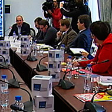
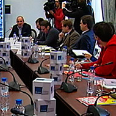

11/12/2014
Москва: отрицательная политическая
эффективность реформ
По реформе здравоохранения есть несколько очевидных вопросов. Например, сокращение числа чиновников часто подается как мера повышения эффективности – в этом случае, очевидно, что вопрос в дублировании или избыточности функций, или...
>>
17/12/2014
Выборы в Госдуму VII созыва: конфи-
гурация кампании и инерционный сценарий Презентация к докладу на IV Форуме специалистов политических профессий, прошедшем 14-16 ноября 2014 года в Серпухове. Выборы в Госдуму VII созыва: конфигурация кампании, параметры инерционного сценария, его риски и факторы... >> 15/10/2014  «Рейтинг 2016» – инструмент
управления, а не измерения Критический анализ «Рейтинга-2016″ Института социально-экономических и политических исследований 1. Комментарии по методике 1.1. В партнерах указан ВЦИОМ, с пометкой «методология и социология», при этом в методике расчета рейтинга не содержится... >> 13/10/2014 Калининград: сплочение перед лицом «внешней угрозы» Глава Калининграда Александр Ярошук сообщил, что «нашел взаимопонимание» с губернатором Николаем Цукановым, и заявил о необходимости прекратить традицию частой смены главы региона. Политконсультант Валентин Бианки считает, что объединение... >> 08/10/2014 «Текучка кадров»: отсутствие стратегии и команды наносит ущерб репутации Прокомментировал «Русской службе новостей» увольнение очередного председателя комитета правительства СПб, на этот раз – комитета по молодежной политике Александра Пархоменко. Ниже – тезисы комментария, изложенные чуть подробнее чем в эфире... >> 07/10/2014 Республика Алтай: сомнительная победа — повод для атаки Комментарий по прошедшим губернаторским выборам в Республике Алтай, по результатам которых вызвавшим оппозиция устроила митинг. Выборы в республике Алтай привлекали много внимания, так как это был один из немногих регионов, в которых... >>
гурация кампании и инерционный сценарий Презентация к докладу на IV Форуме специалистов политических профессий, прошедшем 14-16 ноября 2014 года в Серпухове. Выборы в Госдуму VII созыва: конфигурация кампании, параметры инерционного сценария, его риски и факторы... >> 15/10/2014  «Рейтинг 2016» – инструмент
управления, а не измерения Критический анализ «Рейтинга-2016″ Института социально-экономических и политических исследований 1. Комментарии по методике 1.1. В партнерах указан ВЦИОМ, с пометкой «методология и социология», при этом в методике расчета рейтинга не содержится... >> 13/10/2014 Калининград: сплочение перед лицом «внешней угрозы» Глава Калининграда Александр Ярошук сообщил, что «нашел взаимопонимание» с губернатором Николаем Цукановым, и заявил о необходимости прекратить традицию частой смены главы региона. Политконсультант Валентин Бианки считает, что объединение... >> 08/10/2014 «Текучка кадров»: отсутствие стратегии и команды наносит ущерб репутации Прокомментировал «Русской службе новостей» увольнение очередного председателя комитета правительства СПб, на этот раз – комитета по молодежной политике Александра Пархоменко. Ниже – тезисы комментария, изложенные чуть подробнее чем в эфире... >> 07/10/2014 Республика Алтай: сомнительная победа — повод для атаки Комментарий по прошедшим губернаторским выборам в Республике Алтай, по результатам которых вызвавшим оппозиция устроила митинг. Выборы в республике Алтай привлекали много внимания, так как это был один из немногих регионов, в которых... >>

Вологодская область
Выступления
ГД 2016
Главы регионов
Госдума
Европа
ЕР
Карелия
СМИ
Госдума
Кировская область
Орловская область
Политконсалтинг
Архив
- Январь 2015 (3)
- Декабрь 2014 (2)
- Ноябрь 2014 (1)
- Октябрь 2014 (5)
- Сентябрь 2014 (8)
- Август 2014 (4)
- Июль 2014 (2)
- Июнь 2014 (3)
- Май 2014 (2)
- Апрель 2014 (3)
- Март 2014 (5)
- Ноябрь 2013 (1)
- Август 2013 (1)
- Июль 2013 (1)
- Март 2013 (1)
- Апрель 2012 (1)
- Май 2009 (1)
- Апрель 2009 (1)
- Октябрь 2006 (1)
- Май 2006 (1)
- Февраль 2006 (1)
- Август 2005 (1)